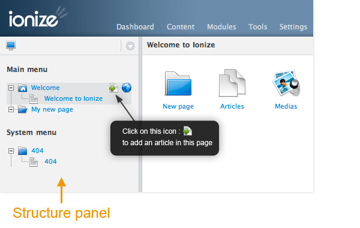

Articles
Articles contains the textual content.
An article can be a simple one, a blog post with publication dates or an images gallery, depending on the way its content is displayed in the linked view.
An article can have one or more parent page, but can also be orphan. In this case, it can't be displayed.
Creating one article
They are several way to create an article :
- Trough the Articles panel : Click on the Create Article button. In this case, the article will be orphan and displayed on the Dashboard in the Orphan Articles list.
- In the Structure panel : Fly with the mouse over one page and click on the Create Article icon. The article will be created with this page as parent.

Articles and parents pages
Articles can be linked to parents page by drag and drop its name:
- From the Structure tree to another page,
- From the Articles panel articles list to a page in the Structure tree,
- By dragging a page from the Structure tree to the Parents when editing an article,
- From the Dashboard articles lists.
Articles fields
Here is a description of the default fields of articles.
These fields can be set through the Ionize article edition panel and through the article options panel.
| Field | Can be translated | Description |
|---|---|---|
| Title | Yes | Article's title |
| URL | No | Article's URL, built when typing the title. Can be changed. Article's URL must be unique for the whole website. |
| Windows title | Yes | Browser's window title, displayed when the article is standalone displayed, for example when displaying one post of a blog style page. |
| Content online | Yes | Is the content of this article online for this language ? |
| Indexed | No | Will the content of this article be indexed for search functionality ? |
| Link | No | Internal page link or external complete URL the articles links to. |
| Marker | No | Color flag for Ionize's editors internal organization. |
| Categories | No | Categories the articles is linked to. |
| Publish date | No |
If the current date is before the publish date, the article will not be displayed on the website. If set, the date displayed by the article's <ion:date /> will be the publish date instead of the creation date. |
| Unpublish date | No | If the current date is after the publish date, the article will not be displayed on the website. |
Displaying articles in views
The <articles /> is an iterator tag which allows to loop through articles :<ion:articles> <!-- Displays the article's title in a H2 HTML tag, only if the title is set --> <ion:title tag="h2" /> <!-- Displays the article's title in a H3 HTML tag, only if the subtitle is set --> <ion:subtitle tag="h3" /> <!-- The article's text content--> <ion:content /> <hr /> </ion:articles> // HTML Result : <h2>My article<h2> <h3>Article's subtitle, if any<h3> <p>The article's content text</p> <hr /> <h2>Another article<h2> <p>The other article's content</p> <hr />
Look at the Ionize articles tags documentation to see complete features.